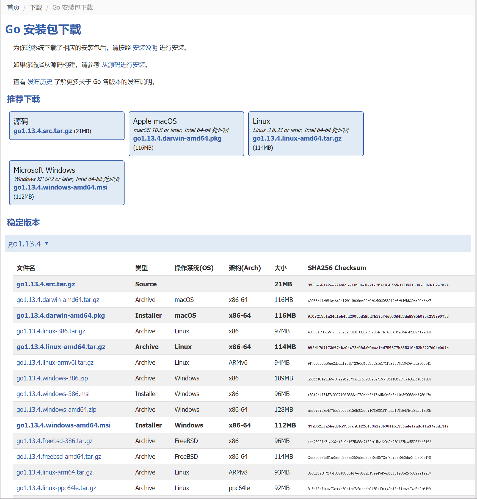

Golang语言介绍
Golang语言是Google公司开发的一种类C语言，是一门编译型的静态语言，而且Golang语言天生带有高并发功能的语言级别支持。
Golang语言类C并不是仅仅在语法上和C语言类似，而且好包含了C的指针特性（优点），可能你有C语言基础的，一看到指针就感觉到可怕，但是Golang的指针只具有C指针的优点，花样也没有C语言多，所以没那么可怕。
忘了告诉你了，Golang的语言设计者其中一位就是C语言和Unix系统开发者Ken Thompson大佬。Golang被称为当代的C语言，当然要有现在其他语言所拥有的语言特性：高并发（协程），垃圾回收GC，类型推断和闭包等。
当前比较流行的Docker容器技术就是使用Go语言开发的，区块链技术实现也可以使用Go语言。Go有这么多优点，还不学吗？
Golang语言环境安装
1. Golang环境下载
第一步肯定是下载Golang的安装包啦！但是，由于某些原因，我们是无法访问Google服务器，但是国内有一些大佬已经在国内做了代理，可以通过国内代理下载：
国内Golang下载：
https://studygolang.com/dl官方Golang下载：
https://golang.org/dl/国内镜像：
https://gomirrors.org/点击网址，我们可以看到一些下载选项：

我们根据自己电脑的操作系统选择不同的下载包下载即可。不过可以看到windows和MacOS 都支持两种下载方式，一种是zip包方式下载，另一种就是推荐下载中列出的msi/pkg。二者差别是：zip下载后需要解压然后自己设置一些变量，msi和pkg都是可执行文件，直接点击就可以。我喜欢使用zip方式，因为我认为这种更新更方便，毕竟什么都是自己在配置。
Golang自从1.5版本之后就是自举实现，如果你想自己编译，则需要下载
推荐下载中的源码，并且你自己的电脑上也要有Go环境。
2. Golang安装
点击下载完之后（我下载的是zip文件），然后解压，我把解压后的文件夹go，移动到D盘根目录上。如果你是使用的msi方式，直接双击运行即可，需要注意它的安装位置（在点击next的时候你也可以改变）。
3. 设置PATH变量
PATH是一个系统原本就带有变量，它的作用是当你执行一个命令或程序的时候，系统可以检查这个变量中的路径，查找那个程序，这样就不用在程序的安装目录里才能执行程序，这个变量每一个系统都有，Windows和Linux的区别是Windows使用英文的;作为多个路径分割符，而Linux使用英文:作为系统分割符。我们设置这个变量就是把我们的Go程序安装目录下的bin\go.exe和bin\fmt.exe程序可以让系统找到，所以，我们要给APTH环境变量添加一个;GO_INSTALL_PATH\bin。其中GO_INSTALL_PATH就是Go安装的路径。
注意：windows下路径分割符是
\,Linux下是/
4. 设置GOROOT，GOPATH，GOBIN环境变量
GOROOT：这个环境变量类似于Java的JAVA_HOME，作用就是告诉系统或者其他需要知道Go的安装位置的一个系统变量GOPATH：设置变量就是指定你的工作区（文件夹），简单一句话，你要在那个文件夹下写项目。因为开发程序需要依赖一些其他的包（库/别人写的代码），所以你要先下载下来，下载到那个地方，就是这个变量所指的文件夹下。这个文件夹下也有一些结构：- bin文件夹：这个文件夹就是存放go编译后可以执行的一些程序
- pkg文件夹：这个文件夹存放的是下载下来的官方的代码或者别人的代码
编译后的库。什么叫做库，类似与压缩包，不过这个压缩包是以.a结尾的。 - src文件夹：这个文件夹存放的是下载下来的官方的代码或者别人的代码，我们自己写的代码也是在这个里面。如果不想在一个文件夹里面写程序，可以设置多个
GOPATH，或者使用Go1.11版本之后开始支持的模块，这个以后再说吧。
GOBIN：这个变量可以不用设置，如果设置好GOPATH的话。这个变量是设置Go下载下来的程序编译成可执行程序后的位置。这个和GOPATH/pkg的区别就是:GOBIN是go可以下载别人的代码，然后编译成可以执行的程序，然后执行，这个等一会就看到，而GOPATH/pkg则是我们写的代码需要引用别人的代码（在GOPATH/src中），我们总不能把别人的代码编译成程序然后在自己的代码中调用吧，所以需要把别人的代码编程一种库的形式使用，类似与Java中的jar文件（其实jar文件就是一个压缩文件）。
说了这么多，也要开始设置动手设置一下吧：
右击此电脑 -> 点击属性 -> 点击左侧的系统高级设置 -> 点击弹出框中的环境变量,然后看图吧：
设置上面的三个变量。
5. 检查一下吧！看看可不可以得到Go的一些信息：
打开一个操作系统的终端，然后输入go version和go env看看你都可以看到什么。
选择一个开发工具
推荐工具
- LiteIDE（没用过）
- GoLand（收费，装了，不经常使用）
- VsCode（挺好的，我习惯使用的）
代理
如果你使用vscode开发的话，你需要安装Go插件，当你使用vscode打开第一个go文件时，会提醒你是否安装一些go的工具，如果你点击确定，含有可能下了半天还没有下载下来，这是因为vscode支持的go的一些工具是google服务器上的，所以肯有可能下载失败。百度你也可以搜，有很多教程，但是最好的解决方式就是设置一个代理。可以是你所理解的代理，也可以是其他大佬给我们提供的代理。
我这里推荐使用：https://goproxy.io/
访问这个网址，里面有教程。或者我直接告诉你：就是再设置一个环境变量GOPROXY,值就是:https://goproxy.io，设置方法你应该会了。设置完成后，你可以再次运行go env命令，找找输出列表中GOPROXY的值是不是设置的那个，然后你再试试是否可以下载。
Hello world for go
在GOPATH/src新建一个文件夹，然后在新建一个名为hello.go的文件
内容：
package main
import "fmt"
func main(){
fmt.Println("Hello world for go!")
}然后打开终端，执行go run hello.go试试看！
开源
Go和开源有着很重要的关系，以后就会知道！
在GitHub上有两本Go开源书籍：